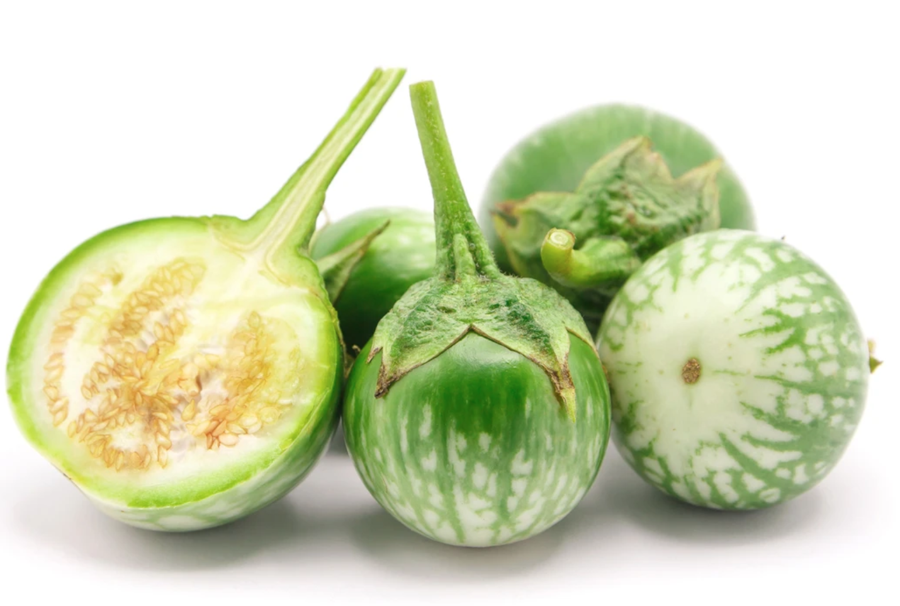
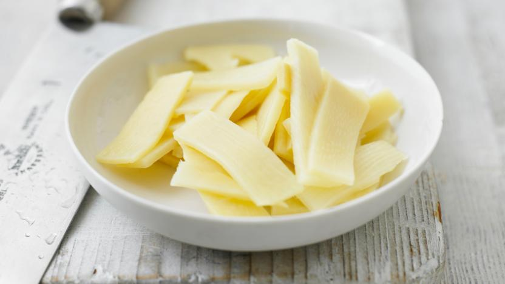

Bootstrap Assignment
Thai Eggplant
Thai eggplant is the name for several varieties of eggplant used in Southeast Asian cuisines, most often of the eggplant species Solanum melongena. They are also cultivated in Sri Lanka and feature in Sri Lankan cuisine. These golf ball sized eggplants are commonly used in Thai cuisine and in Cambodian Cuisine.
Photo Credit: Thai Food Online
Description from: Wikipedia
Bamboo Shoots
Bamboo shoots or bamboo sprouts are the edible shoots of many bamboo species including Bambusa vulgaris and Phyllostachys edulis. They are used as vegetables in numerous Asian dishes and broths. They are sold in various processed shapes, and are available in fresh, dried, and canned versions.
Photo Credit: BBC
Description from: Wikipedia
Red Bell Pepper
The bell pepper is a cultivar group of the species Capsicum annuum. Cultivars of the plant produce fruits in different colours, including red, yellow, orange, green, white, and purple. Bell peppers are sometimes grouped with less pungent pepper varieties as "sweet peppers".

Photo Credit: HyVee
Description from: Wikipedia